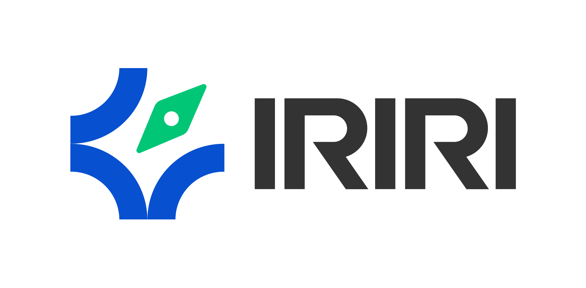

Signal Desk
Find and qualify signal for sales and prospecting.

Agency OSIRIRI LABS / AGENCY CAPABILITY
A human-directed AI operating model for agencies that want to preserve judgment, make context reusable, and move good work forward with confidence.
WHY THIS MATTERS
Agencies lose time and quality when research lives in one place, decisions in another, and the reason behind the work disappears at handoff.
The opportunity is not more output for its own sake. It is a better way to carry context from signal to decision to reviewed work.
THE OPERATING MODEL
Knowledge Vault is the coordination layer. It keeps context owned, findable, and separate, so every surface can contribute and retrieve what matters.
Find and qualify signal for sales and prospecting.
Briefs, decisions, sources, principles, and learnings that keep the agency's context available to the next decision.
Move from brief to explored, directed, assembled, reviewed output.
Make ownership, separation, consent, privacy, IP, and quality gates part of practice.
WHAT GETS INSTALLED
Build a research-to-CRM practice that captures source-backed context and drafts relevant outreach. AI assists with finding, sorting, and composing. A human owner decides fit, consent, and next action.
MEASUREMENT DESIGN
This is a baseline-to-target design, not a promised result. Choose a small set of frictions the agency recognizes, then agree what better coordination looks like.
From brief received to a credible first creative direction.
THE ENGAGEMENT PATH
Map where context, quality, and ownership currently break down.
Align language, principles, tool choices, and review habits.
Build the vault and the first operating surfaces around real work.
Test with a willing owner, document the practice, and make it teachable.
Return to the baseline, inspect the change, and decide what to extend.
06 / NEXT CONVERSATION
Bring this model into the room as a working proposal. The next conversation should make the first useful pilot visible.